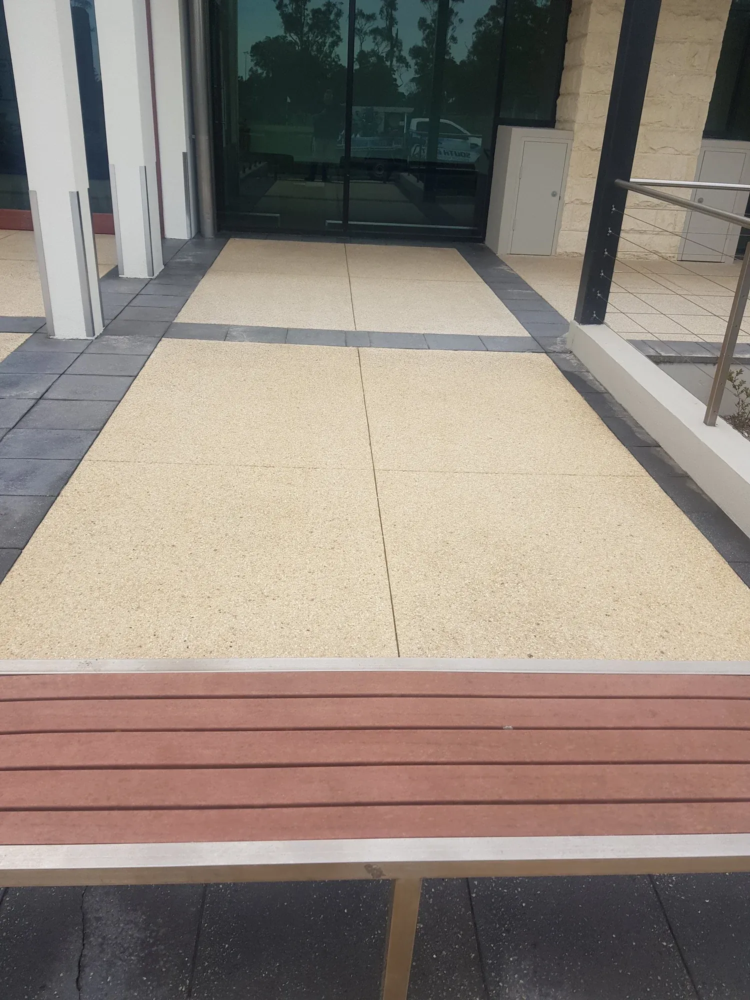

Streak-free clarity
Professional tools and technique leave glass genuinely clear — no smears, no streaks, no missed spots.
Streak-free exterior glass for homes and businesses across Traralgon, Morwell and South-East Melbourne — windows, shopfronts, balustrades and more, cleaned to a crystal-clear finish.

First impressions count — and clean glass makes all the difference. SEPWS provides streak-free external window cleaning for both residential and commercial properties across Traralgon, the Latrobe Valley and South-East Melbourne.
From family homes to busy shopfronts and offices, we clean exterior glass, frames, sills and tracks so your windows sparkle and your business looks its best. Ideal as a standalone service or paired with a house wash.

Clearer glass, better light and a sharper first impression — without the ladder risk.
Professional tools and technique leave glass genuinely clear — no smears, no streaks, no missed spots.
Spotless shopfront glass makes your business look sharp and welcoming to every customer who walks past.
We handle multi-storey and awkward-access glass safely, so you don't have to balance on a ladder.
We check window heights, access points and any tricky spots before we start.
Frames, sills and tracks are wiped down so dirt doesn't run back onto clean glass.
Exterior glass is washed with the right solution and tools for a streak-free finish.
We detail edges and corners and do a final check so every pane is crystal clear.
Genuine external window cleaning jobs from across Gippsland & South-East Melbourne.
Proudly servicing 30+ suburbs from our Morwell base — including these popular areas.
Common questions from homes and businesses across the region.
Yes. SEPWS provides streak-free external window cleaning for both residential and commercial properties across Traralgon, Morwell and South-East Melbourne, including shopfronts, offices and multi-storey glass.
We clean exterior frames, sills and tracks as part of the service, so dirt doesn't wash back onto the glass and the whole window looks fresh.
Yes. We have the equipment to safely clean multi-storey and hard-to-reach exterior glass, so there's no need for you to get on a ladder.
Most homes benefit from an external window clean two to four times a year, while shopfronts and offices often prefer a regular monthly or quarterly schedule to always look their best.
We clean windows across Traralgon, Morwell, Moe, Warragul, Pakenham, Berwick, Dandenong, Frankston, Mornington and the wider Gippsland and South-East Melbourne area.
Get a fast, free quote anywhere across Gippsland & South-East Melbourne. No pressure, just a fair price and a great result.